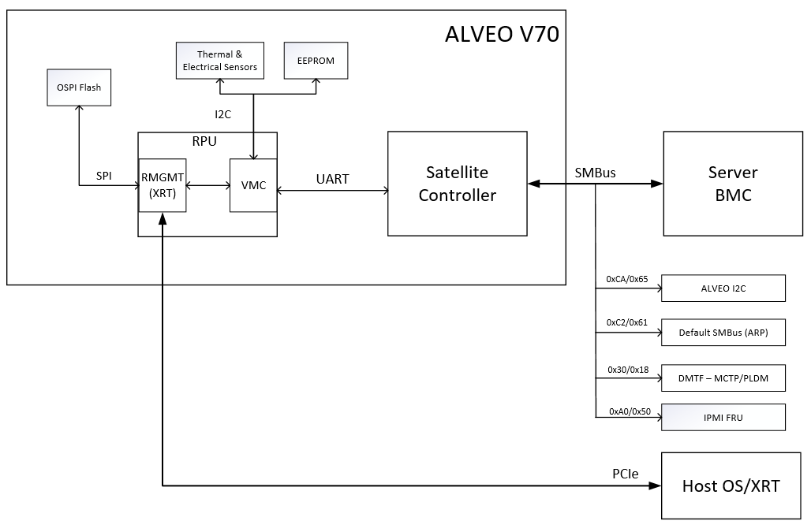

Introduction¶
Xilinx® Alveo™ Data Center cards use the following two communication channels for management.
Out-of-band communication channel: The satellite controller communicates with the server baseboard management controller (BMC) via SMBus/I2C interface to provide out-of-band card management functionalities.
In-band communication channel: The PCIe interface provides in-band management to host for card programming and communication of sensor information, such as power and temperature. The host CPU communicates across PCIe to the card management controller (CMC) residing on the FPGA, which has a connection to the satellite controller. The CMC firmware (running in MicroBlaze™ on the FPGA) and the satellite controller firmware (running in MSP432 MCU) communicates via the UART channel using a Xilinx proprietary protocol. All sensor information are passed from the satellite controller to the host through this in-band channel.
Satellite Controller (SC)¶
The satellite controller firmware runs on TI’s MSP432 device and is an essential component of Alveo card management, providing in-band and OoB communication mechanisms. The MSP432 MCU, EEPROM and few select peripherals reside on the auxiliary power domain (i.e.) 3V3_AUX.
Figure: Alveo communication path block diagram

Figure: Alveo U30 specific block diagram

Figure: Alveo V70 specific block diagram
Satellite Controller Firmware Version
Not all features described in this document are available in older SC FW. Refer to Alveo Data Center Accelerator Card Platforms User Guide (UG1120) to ensure the latest FW is being used.
Out-of-Band Communication¶
When installed in a server, the SC FW communicates with server BMC. The main purpose of OoB communication is to respond to requests that originate from server BMC. It uses this information to take action related to power and thermal management (i.e., to ramp-up fans or send requests to throttle down power consumption). The MSP432 and the sensors and peripherals it accesses reside on the AUX 3.3V always-on power domain.
The SMBus/I2C is used for OoB communication. The OoB communication supports three protocols. The protocols and the I2C slave address (both 7-bit and 8-bit) are given in the following table.
Table: Slave Addresses and Corresponding Protocols
| I2C Slave Address (7-bit) | I2C Slave Address (8-bit) | Protocol/Features Supported |
|---|---|---|
| 0x18 | 0x30 | Standard PLDM/MCTP |
| 0x50 | 0xA0 | IPMI FRU data |
| 0x61 | 0xC2 | Default SMBus (2.0) for ARP |
| 0x65 | 0xCA | ALVEO I2C commands |
IPMI FRU support
SC FW supports IPMI field replaceable unit (FRU) data read at I2C slave address 0x50 (0xA0 in 8-bit). For FRU data access, 2-byte addressing mode is supported and the FRU data contents are explained in (Alveo FRU Data Specification).
See Alveo™ FRU Support for more details.
ALVEO I2C/SMBus Communication
SC FW supports I2C/SMBus protocol based OoB communication at I2C slave address 0x65 (0xCA in 8-bit) and provides support for server BMC that does not accept PLDM or distributed management task force (DMTF) specifications. The following information is exposed via I2C/ SMBus protocol:
- Thermal sensors such as FPGA, max Board, max DIMM, and max QSFP temperature
- Total board power consumption
- SC FW version number
- Critical Sensor Data Record (CSDR) - Specific to ALVEO U30 only
See I2C/SMBus Commands I2C command implementation details.
The following table is a comprehensive list of all OoB commands supported by SC using ALVEO I2C/SMBus protocols.
Table: List of ALVEO I2C/SMBus commands
| Command Code | Sensor Name | SMBus Transaction Type | Num of resp Bytes |
|---|---|---|---|
| 01h | Max DIMM temperature | Read bytes | 1 |
| 02h | Max Board temperature | Read bytes | 1 |
| 03h | Board power consumption | Read words | 2 |
| 04h | SC FW version | Read bytes | 4 |
| 05h | FPGA die temperature | Read bytes | 1 |
| 06h | Max QSFP temperature | Read bytes | 1 |
| 0Fh | Reset FPGA | Write byte | 1 |
| 20h | CSDR | Block read | 64 |
PLDM Over MCTP Over SMBus Protocol
SC supports the SMBus discovery via the default SMBus 2.0 at I2C slave address 0x61 (0xC2 in 8-bit) and the MCTP/PLDM protocol at I2C slave address 0x18 (0x30 in 8-bit). Alveo OoB implementation adheres to the following DMTF specifications:
- PLDM Base Specification ([DSP0240])
- PLDM for Platform Monitoring and Control Specification ([DSP0248])
- MCTP Base Specification ([DSP0236])
- MCTP SMBus Binding Spec ([DSP0237])
See DMTF Implementation for more details
The following figure illustrates the PLDM over MCTP over SMBus binding specification stack.
Figure: PLDM Over MCTP Over SMBus Binding Specification Stack

The following sensor readings are reported via PLDM OoB:
- FPGA/Device temperature
- Board temperature
- QSFP0 temperature (if present)
- QSFP1 temperature (if present)
Default SMBus 2.0 commands
For the purposes of SMBus address discovery (at default SMBus address 0xC2 (8-bit)), Alveo cards are ‘Fixed and Non-Discoverable Device’. Only Get UDID (general) and Get UDID (directed) commands are supported.
MCTP control messages The following MCTP control commands are supported in the SC:
Table: Supported MCTP control commands and description
| Command | ID | Description |
|---|---|---|
| Set Endpoint ID | 0x01 | Assigns an EID to the endpoint at the given physical address |
| Get Endpoint ID | 0x02 | Returns the EID presently assigned to an endpoint |
| Get Endpoint UUID | 0x03 | Retrieves a per-device unique UUID associated with the endpoint |
| Get MCTP Version Support | 0x04 | Lists which versions of the MCTP control protocol are supported on an endpoint |
| Get Message Type Support | 0x05 | Lists the message types that an endpoint supports |
PLDM commands
The following PLDM commands are supported in the SC:
Table: Supported PLDM commands and description
| Command | ID | Description |
|---|---|---|
| SetTID | 0x01 | Sets the terminus ID (TID) for a PLDM terminus |
| GetTID | 0x02 | Returns the present TID setting for a PLDM terminus |
| GetPLDMVersion | 0x03 | Returns versions for PLDM base & type specification |
| GetPLDMTypes | 0x04 | Returns PLDM type capabilities and list of the supported PLDM types |
| GetPLDMCommands | 0x05 | Returns PLDM command capabilities supported for a specific PLDM type and version |
| GetSensorReading | 0x11 | Returns present reading and threshold event state values from a numeric sensor |
| GetSensorThresholds | 0x12 | Returns the present threshold settings for a PLDM numeric sensor |
| GetPDRRepositoryInfo | 0x50 | Returns size & number of records in PDR and time stamps on last PRD update |
| GetPDR | 0x51 | Returns individual PDRs from a PDR repository |
| GetPDRRepoSignature | 0x53 | Returns a signature that changes when the PDR repo has been changed |
These PLDM commands are categorized into type 0 and type 2, as detailed in the following table.
Table: Supported Type 0 and Type 2 PLDM commands
| PLDM Type 0 Commands | PLDM Type 2 Commands |
|---|---|
| SetTID (0x01) | SetTID (0x01) |
| GetTID (0x02) | GetTID (0x02) |
| GetPLDMVersion (0x03) | GetSensorReading (0x11) |
| GetPLDMTypes (0x04) | GetSensorThresholds (0x12) |
| GetPLDMCommands (0x05) | GetPDRRepositoryInfo (0x50) |
Xilinx Support
For support resources such as answers, documentation, downloads, and forums, see the Alveo Accelerator Cards Xilinx Community Forum.
License
Licensed under the Apache License, Version 2.0 (the “License”); you may not use this file except in compliance with the License.
You may obtain a copy of the License at http://www.apache.org/licenses/LICENSE-2.0
All images and documentation, including all debug and support documentation, are licensed under the Creative Commons (CC) Attribution 4.0 International License (the “CC-BY-4.0 License”); you may not use this file except in compliance with the CC-BY-4.0 License.
You may obtain a copy of the CC-BY-4.0 License at https://creativecommons.org/licenses/by/4.0/
Unless required by applicable law or agreed to in writing, software distributed under the License is distributed on an “AS IS” BASIS, WITHOUT WARRANTIES OR CONDITIONS OF ANY KIND, either express or implied. See the License for the specific language governing permissions and limitations under the License.
XD038 | © Copyright 2021 Xilinx, Inc.